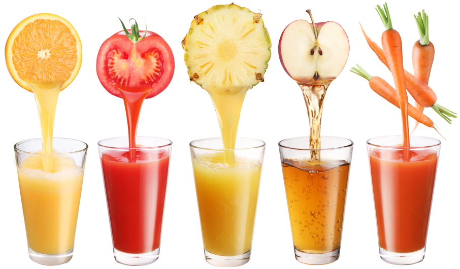

Are you looking for some healthful information?
10 Benefits of a Juice Cleanse You Didn't Know
Everyone is doing it! Well, maybe not quite everyone, but it seems that lately you can't open a magazine without hearing about someone doing a juice cleanse. The juicing fad is drawing in people like fruit flies to a brown banana. Alright, maybe that imagery brings some negative connotation to it, but it isn?t meant to be a bad thing. Gulp down these 10 benefits of a juice cleanse.

Eat Eight Tomatoes in One Go
That's right, by juicing your vegetables and fruits, you are able to consume a larger amount of them at once. For those that are having a struggle meeting the recommended 4?6 servings a day (also known as practically everyone) this is a great benefit.
It Breaks the Cycle
Junk food has evil powers; it definitely holds me under its spell from time to not-so-occasional time. A beautiful benefit of starting with a small-scale juice cleanse, say three days, is that it helps to ward off the control junk food holds over you. It helps to break the cycle and reset your stomach, making those urges a little easier to fight.
Give Your Liver a Rest
The liver's function in the body is to detoxify - in fact, it's our go-to guy. Every single thing that passes through our mouth passes through our liver for a detoxification before it can enter the rest of the body. By doing an organic juice cleanse, you give the liver a little less to process. Which, with much of America's healthy lifestyle today, is practically the equivalent of giving it a night off.
Rehydrate Your Body
Most people do not drink enough water, with other more inadequate beverages, like coffee and soda, being their main fluid intakes. By partaking in a juice cleanse, the amount of adequate beverages you drink helps your body out in many ways. It helps to ensure your body is working more efficiently, flushes your system and often increases your alertness. Afternoon crash? Say goodbye to that.
Your Skin Will Glow so Much You'll Practically Have a Visible Aurora
Going on a juice cleanse will rehydrate you while filling your body with a lot of vitamins, nutrients, flavonoids, anthocyanins and the like. Just being well hydrated positively affects your skin; adding a surplus of easily absorbed nutrients skyrockets those effects. The result is the glowing complexion that would typically come with a lot of money or a long vacation.
Reduce Your Stress Level and Catch Those Zzz's
When you juice a variety of fruits and vegetables, you're able to diversify the nutrients your body receives. Leafy green vegetables are high in magnesium, a relaxing mineral that has a mellowing effect that can help improve sleep quality. That's not all magnesium does either. Magnesium and vitamin C help to ward of the stress hormone cortisol.
Diversify Your healthy lifestyle
By juicing, not only are you able to consume more fruits and vegetables, you are also able to add more to your healthy lifestyle that you wouldn't normally eat. Not the biggest fan of beets? Juice one with some greens and fruits. When juicing, it's recommended to add a rainbow of produce to diversify your benefits. It is much easier to hide the taste of your least favorite but oh-so-good-for-you veggie with other flavors in a juice than on a plate.
Absorb Nutrients Faster
Many avid juicers argue that by solely consuming fruits and veggies your intestines do not have to work as hard to break down multiple types of nutrients. In fact, there is hardly anything to break down, so most of the nutrients are easily and readily absorbed. This is great considering 95% of the vitamins and enzymes our bodies need are found in the juice of raw fruits and vegetables.
Shed Some Pounds
A juice cleanse is an easy and great way to jump start a healthy lifestyle. As I mentioned earlier, it helps to ward off cravings and control your appetite. Naturally low in calories, yet still delivering concentrated healing and beneficial nutrients, it supplies the body with everything it needs while helping to shed it of water body mass, and in some cases, fat.
Increases Your Energy
It may sound backwards that drinking solely juice will give you energy, but it does. After your body adjusts, you will feel more clarity and have more energy. Some feel so much better that they never even miss their daily coffee.
Credits to : lifehack
{kind=link}
{kind=link}
{kind=link}
{kind=link}
{kind=link}
{kind=link}
Subscribe
For more tips and tutorials, please enter your email address and hit the SUBSCRIBE button. Thnk you!
Developed by: 
space